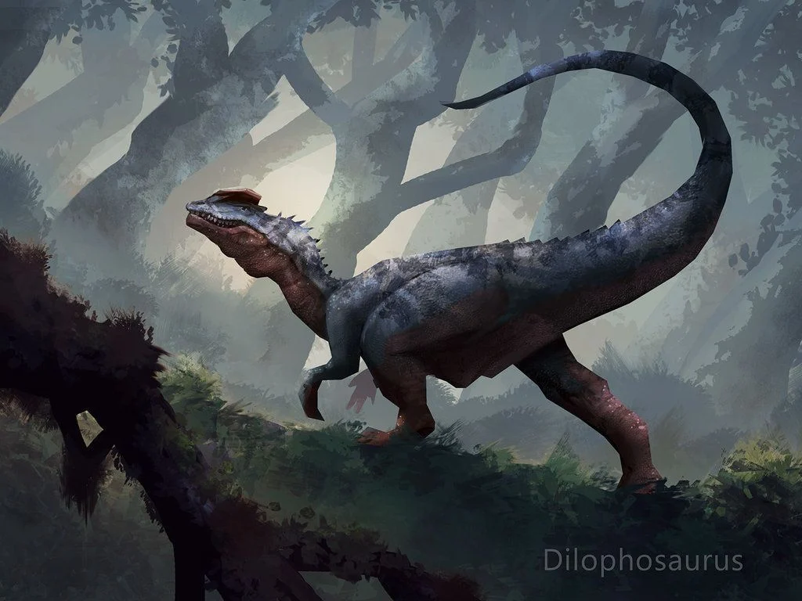

Dilophosaurus wetherilli es la única especie conocida del género extinto Dilophosaurus de dinosaurio terópodo dilofosáurido que vivió a principios del periodo Jurásico, hace aproximadamente 200 y 190 millones de años, entre el Sinemuriense y Pliensbachiense, en lo que hoy es Norteamérica. La especie Dilophosaurus sinensis, que anteriormente era considerada como perteneciente a este género, ha sido reclasificada como perteneciente al sinónimo más moderno del género Sinosaurus, como S. sinensis.
La característica más distintiva del Dilophosaurus es el par de crestas redondeadas en su cráneo, usado posiblemente para la exhibición. En 1997, Dodson notó que las crestas craneales aparecieron antes en el Dilophosaurus que en otros tipos de terópodos. Estudios de Robert Gay demuestran que pudo haber habido variación de tamaño entre ambos sexos, pero nada dicen acerca de la cresta en sí. Los dientes del Dilophosaurus son largos, pero tienen una base bastante pequeña y se amplían basalmente. Otra característica del cráneo era una muesca detrás de la primera fila de dientes, dando al Dilophosaurus casi un aspecto de cocodrilo, similar a los dinosaurios supuestamente piscívoros espinosáuridos. Esta "diastema" existió debido una conexión débil entre los huesos premaxilares y maxilares del cráneo. Esta conformación llevó a la hipótesis temprana que el Dilophosaurus era un carroñero, con los dientes delanteros siendo demasiado débiles para derribar y sostener una presa grande.
Se encontraron tres esqueletos de dinosaurios en una lutita violácea, dispuestos en un triángulo, de unos 9.1 metros de largo por lado. El primero estaba casi completo, careciendo solo del frente del cráneo, partes de la pelvis y algunas vértebras. El segundo estaba muy erosionado, incluido el frente del cráneo, las mandíbulas inferiores, algunas vértebras, huesos de las extremidades y una mano articulada. El tercero estaba tan erosionado que solo consistía en fragmentos de vértebras. El primer esqueleto bueno estaba encerrado en un bloque de yeso después de diez días de trabajo y cargado en un camión, el segundo esqueleto se recogió fácilmente ya que casi se capeó por completo del suelo, pero el tercer esqueleto casi se había perdido.